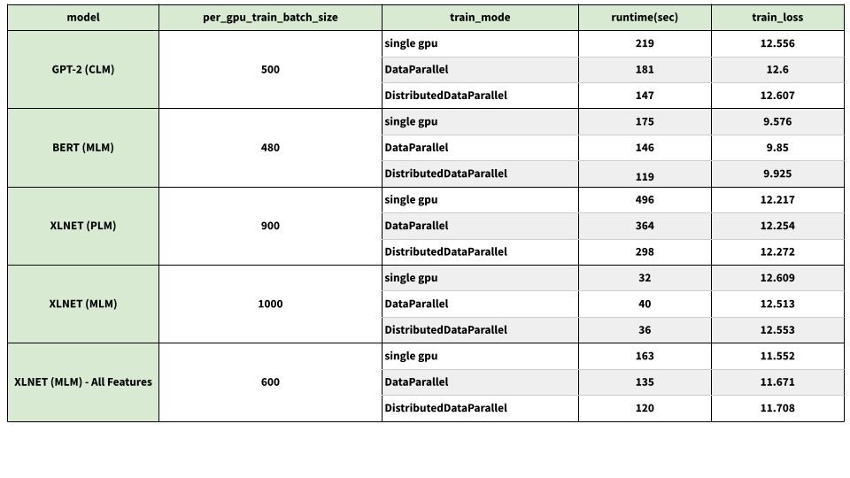

Multi-GPU data-parallel training using the Trainer class
To train models faster, users can use Data-Parallel training when using transformers4rec.Trainer class for training. When using the data-parallel approach for multi-GPU training, the training data will be distributed between the GPUs to speedup training and support larger batch sizes within each step of training.
The Trainer class supports both DataParallel and DistributedDataParallel built-in features of PyTorch. in this documentation we will explain how each of these built-in features work and how they can be used.
DataParallel
When the DataParallel mode is used for training on each training step:
GPU0 reads the full batch then evenly distributes it between available GPUs
The latest model will be copied to all GPUs
A Python thread will be assigned to running
forward()on each GPU and thepartial loss will be sent to GPU0 to compute total lossComputed total loss will be scattered between GPUs and threads will run
backward()Gradients from each GPU will be sent to GPU0 and their average will be computed
As we see, parallelism in DataParallel mode is implemented through Python threads which will be blocked by GIL (Global Interepreter Lock) so DataParallel is not the preferred method. Users are advised to use DistributedDataParallel instead as it uses multi-processing instead of multi-threading and is better maintained. Also, some models types such as transfoxl can not be used with DataParallel. To learn more about DataParalle refer to PyTorch documentations.
To use the DataParallel mode training user just needs to make sure CUDA_VISIBLE_DEVICES is set. For example when 2 GPUs are available:
Add
os.environ["CUDA_VISIBLE_DEVICES"]="0,1"to the script
or
Run
export CUDA_VISIBLE_DEVICES=0,1in the terminal
Do not try wrapping the model with torch.nn.DataParallel yourself because that will break automatic wrapping done by Trainer.
Note: When using DataParallel the dataloader generates one batch on each train step then the batch will be divided between GPUs so the per_device_train_batch_size argument represents the total batch size in this mode, not size of the batch each GPU receives.
DistributedDataParallel
This is the suggested and more efficient method. When a model is trained using the DistributedDataParallel mode:
A eparate process will be assigned to each GPU in the beginning and GPU0 will replicate the model on each GPU
On each step each GPU will consume the separate mini-batch produced for it by the dataloader
On the backward pass the gradient from GPUs will be averaged for accumulation
To learn more about DistibutedDataParallel see the PyTorch Documentation.
To train using the DistributedDataParallel mode user should use PyTorch distributed launcher to run the script:
python -m torch.distributed.launch --nproc_per_node N_GPU your_script.py --your_arguments
To have one process per GPU replace N_GPU with the number of GPUs you want to use and make sure CUDA_VISIBLE_DEVICES is set accordingly.
Note: When using DistributedDataParallel number of partitions of the dataset must be equal or larger than number of processes. If a parquet file with small number of partitions is used, try repartitioning it using cudf or pandas before training. The dataloader checks dataloader.dataset.npartitions and will repartition if needed but we advise users to repartition the dataset and save it for better efficiency. Use pandas or cudf for repartitioning. Example of repartitioning a parquet file with cudf:
df.to_parquet("filename.parquet", row_group_size=10000, engine="pyarrow"
Choose row_group_size such that nr_rows/row_group_size>=n_proc because n_rows=npartition*row_group_size.
Performance Comparison
We trained and evaluated a number of models using single GPU, DataParallel and DistributedDataParallel training mode and the results are shown in the table below. To reproduce, use the models included in ci/test_integration.sh.

These experiments used a node with 2 Tesla V100-SXM2-32GB-LS GPUs.